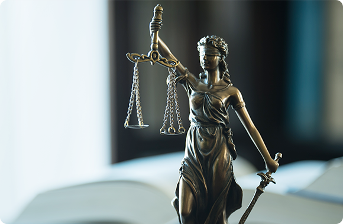

>
지속경영
> 윤리경영
ETHICS
고객과 직원을 생각하는 에너지 기업
“사회적 책임(CSR)의 역할 수행을 통한 지속가능경영을 추구하여 항상 사랑받는
기업이 될 수 있도록 임직원 모두가 하나되어 최선의 노력을 경주하겠습니다.”
Compliance Message
- 
투명경영 및 윤리경영은 이제 선택이 아닌 시대적 요구에 따른 Global Standard로 자리잡고 있습니다. GS파워는 급변하는 경영환경에 보다 효과적으로 대처하기 위해 CEO 자율준수 경영방침 천명 아래 2003년 07년 18일 자율준수 프로그램을 도입하며, 자율준수규정, 윤리규범 실천지침을 제정, 시행하여 윤리경영을 위한 체계를 구축하였습니다. GS파워는 이러한 자율준수 프로그램의 시행에 따라 경영지원실장 겸 CFO를 자율준수관리 자로 선임하고 CCP교육을 주기적으로 실시하고 있습니다. GS파워는 앞으로도 이러한 윤리경영의 바탕아래 고객을 포함한 모든 이해 관계자들의 신뢰를 확보하여, 21세기 초일류 기업이 될 수 있도록 지속적인 노력으로 나아갈 것입니다.
Ethics Standard
-
- 제1조 실천의 목적
- GS파워는 Clean Energy Service 분야에서 최적의 사업 포트폴리오 구성과 최대의 시너지 창출로 최고의 경쟁력을 갖춘 Energy Frontier로 성장한다.
- 아울러 고객에게는 탁월한 제품과 서비스로 만족을 제공하고, 거래선 및 협력회사와의 공존공영을 이루며, 임직원에게는 공평한 기회와 적극적 지원으로 성장을 제공한다.
- 주주에게는 탁월한 경영으로 주주가치 극대화를 실현하며, 사회에는 안전한 사업장 운영과 적극적 환경보호 및 사회공헌 활동을 통하여 회사와 사회의 지속 가능한 성장ㆍ발전을 추구하고, 모든 경영활동에 있어서 보편적 인권 및 인류 공존의 가치를 지지한다.
- 이를 위하여 GS파워는 경영활동의 의사결정 및 임직원들의 업무수행 기준이 되는 윤리규범을 제정하고, 그 실천을 다짐한다.
자세히 보기 -
- 제2조 실천의 내용
- 2.1 고객만족 경영 - 고객이 회사의 이익과 성장의 기반임을 인식하고 고객이 원하는 참된 가치를 제공함으로써 고객만족을 실현한다.
- 2.1.1 고객의 의견을 항상 존중하고, 이를 경영활동의 최우선 판단기준으로 삼는다.
- 2.1.2 고객의 요구와 기대에 부응하는 최상의 제품과 서비스를 제공한다.
- 2.1.3 고객의 정보와 이익을 소중히 보호하고 고객과의 약속은 반드시 이행한다.
- 2.2 협력회사와의 공존공영
- 투명하고 공정한 거래를 통해 상호 신뢰와 협력관계를 구축함으로써 공동의 발전을 추구한다.
- 2.2.1 협력회사에게 공평한 거래 기회를 제공하고 합리적인 거래조건을 보장하여 동반자 관계로 성장한다.
- 2.2.2 협력회사와 상호 대등한 위치에서 공정하게 거래하며, 어떤 형태로든 우월적 지위를 이용한 부당한 행위를 하지 않는다.
자세히 보기 -
- 부칙
- 1. 본 윤리규범은 2004년 7월 18일부터 시행한다.
- 2. 본 윤리규범은 2011년 3월 8일부터 개정하여 시행한다. (전면개정)
- 3. 본 윤리규범은 2011년 10월 21일부터 개정하여 시행한다. (인권 및 인류공존사항 명시)
자세히 보기
Compliance Rules
-
- 제1조 목적
- GS파워주식회사 자율준수관리자의 체계적이고 능률적인 업무수행을 위한 실행기구의 설치 및 직무범위를 정하는데 있다.
자세히 보기 -
- 제2조 기본원칙
- 2.1 회사의 전 임직원은 업무를 수행함에 있어 선량한 관리자의 주의를 가지고, 관련법령을 충실히 준수해야 하며, 자율준수관리자의 요구가 있는 경우 자신의 업무와 관련하여 준법을 서약하는 자율준수실천 서약서를 제출해야 한다.
- 2.2 회사의 전 임직원은 관련법령이나 회사의 정책, 규정, 프로세스 및 지침에 대해 몰랐음을 이유로 위반행위가 면책되지 않음을 인식하고, 의문사항이 있거나 위반할 우려가 있는 경우에는 리더나 자율준수사무국에 문의해야 한다.
자세히 보기 -
- 제3조 용어의 정의
- 3.1 “자율준수관리자” (Corporate Compliance Officer)란 회사의 자율준수활동이 효율적으로 수행될 수 있도록 총괄 하는 자
- 3.2 “자율준수활동”(Compliance Activities)이라 함은 회사의 제반 업무를 수행함에 있어 관련되는 법령, 회사의 각종 정책(Policy), 규정(Standard), 절차(Process) 및 지침(Work Instruction) 등이 준수될 수 있도록 하고 이를 장려하며, 그 위반 여부를 점검, 조사, 감시하고 그에 따른 미비점을 시정, 개선하도록 조치하는 활동.
- 3.3 “조직장”(Unit Head)이라 함은 부문장 및 직보조직의 장으로서 각 조직별 자율준수활동을 총괄하는 자로 조직 내 자율 준수활동의 전반적 시행 및 위반행위에 대하여 감독할 책임이 있다.
- 3.4 “자율준수규정 실천지침”(Compliance Manual)이란 자율준수규정준수를 위해 모든 임직원이 준수해야 할 행동과 가치판단의 기준을 정하기 위한 지침을 의미한다.
- 3.5 “내부제보자”(Whistleblower)라 함은 관련법령, 회사의 사규 등이 위반되거나 위반될 우려가 있을 경우 이를 자율 준수업무 관리절차에 따라 보고하는 자를 말한다.
- 3.6 리더란 회사 동일 조직 내 조직장 및 선배 사원, 상급자, 멘토 등을 통칭
자세히 보기 -
- 제4조 교육 및 전파
- 4.1 자율준수관리자는 회사의 자율준수활동에 필요한 전반적인 관련 제도의 정비, 교육 및 전파와 감시ㆍ감독 체계를 수립하여 운영하며, 각 조직 내 자율준수활동이 체계적이고 효율적으로 수행될 수 있도록 한다.
- 4.2 자율준수관리자는 자율준수활동과 관련하여 교육이 필요한 경우 관련부서에 교육자료를 개발하여 실시하도록 하고, 인사/대외협력부문에 위임하여 이에 따른 교육체계를 수립하여 시행하도록 할 수 있다.
- 4.3 각 조직은 회사의 모든 자율준수제도와 관련한 교육자료 개발, 교육체계의 수립과 교육의 실시에 대하여 자율준수 관리자와 협의하여야 한다.
- 4.4 각 부문 및 직보조직의 자율준수 교육을 수료한 모든 임직원은 교육이수확인서를 자율준수관리자에게 제출하여야 하며, 이를 제출 받은 자율준수관리자는 동 확인서를 선량한 관리자의 주의로써 보관하여야 한다.
자세히 보기 -
- 제5조 감시 및 감독
- 5.1 자율준수관리자는 전 임직원이 자필 서명한 자율준수(실천)서약서를 년1회 이상 제출하도록 할 수 있다.
- 5.2 자율준수관리자는 관계법령 및 자율준수제도 위반행위를 효과적으로 감시ㆍ감독하기 위하여 내부제보자 시스템을 설치, 운영하여야 한다.
- 5.3 자율준수관리자는 회사 임직원의 행위가 관련법령이나 회사의 정책, 규정, 절차 및 지침에 위반된 것이 발견된 경우 대표이사에게 보고하여야 하며, 필요한 경우 사원 상벌위원회에 관련 임직원의 징계와, 해당조직에 적절한 대책마련을 요구할 수 있다. 아울러, 동일 또는 유사한 위반사례가 재발되지 않도록 예방에 최선을 다해야 한다.
- 5.4 자율준수관리자는 필요하다고 인정되는 경우, 회사의 자율준수활동과 관련하여 공인회계사, 변호사 등 외부의 전문가로부터 조력을 받아 업무를 수행할 수 있다.
자세히 보기 -
- 제6조 내부제보자 시스템
- 6.1 임직원은 관련법령이나 회사의 정책, 규정, 절차 및 지침에 위반되거나 위반될 우려가 있는 일체의 사안에 대하여 발견 즉시 자율준수관리자 또는 자율준수사무국에 제보할 의무가 있다.
- 6.2 자율준수관리자는 제보 받은 사안에 대해 조사한 경우 동 결과를 지체 없이 대표이사에게 보고하며, 당해 위반 행위에 대하여 필요한 조치를 취하여야 한다.
- 6.3 자율준수관리자는 상기 제보로 인하여 불법행위방지, 비용경감, 경영위험회피 등 회사에 현저한 공헌이 발생한 경우, 제보자에 대하여 그에 상응하는 포상을 대표이사에게 건의할 수 있다.
- 6.4 임직원은 동 제보로 인하여 어떠한 인사적, 경제적인 불이익도 받지 않으며, 제보를 접수한 자율준수관리자와 자율 준수사무국은 제보자의 신원 및 관련정보가 누출되지 않도록 선량한 관리자의 주의로써 보호하여야 한다.
자세히 보기 -
- 제7조 위반사항의 처리
- 7.1 자율준수관리자는 회사의 정책, 규정, 절차 및 지침에 위반한 자 및 당해 위반행위가 발생하거나 발생할 우려가 있는 조직에 대하여, 그 행위의 시정과 개선을 요구할 수 있다.
- 7.2 자율준수관리자는 관련법령이나 회사의 정책, 규정, 절차 및 지침에 위반한 자에 대하여 상별 위원회에 그에 대한 제재를 요구할 수 있다.
- 7.3 시정요구 및 제도의 개선을 요구 받은 위반행위자 및 해당 조직은 요구일로부터 1개월 이내에 시정 및 개선요구 사항에 대한 처리계획을 마련하여 자율준수관리자에게 보고하여야 한다.
- 7.4 사원 상벌위원회는 자율준수관리자가 요청한 징계안건에 대한 징계결과와 기타 회사의 자율준수업무와 관련하여 필요하다고 인정되는 징계사안에 대한 징계결과를 자율준수관리자에게 통보하여야 한다.
자세히 보기 -
- 제8조 보고체계
- 8.1 자율준수관리자는 자율준수활동의 전반적인 운영현황에 대하여 대표이사에게 분기별 1회, 이사회에 연2회 이상 보고하여야 한다.
- 8.2 자율준수관리자는 전사 자율준수활동계획 수립을 위해 매년도 말 각 조직의 다음 년도 자율준수계획서(Unit Compliance Plan)의 작성을 요청할 수 있다.
자세히 보기 -
- 부칙
- 제1조(시행일) 본 규정은 2003년 7월 18 일부터 시행한다.
- 제2조(준법감시규정의 폐지) 본 규정을 시행함과 동시에 기존 준법감시규정(2001.6.28제정)을 폐지한다.
- 제3조(윤리규범제정) 본 규정에 대한 자율준수규정 실천지침으로 『윤리규범』 및 『윤리규범 실천지침』을 제정한다
- 제4조(자율준수규정 및 자율준수규정 실천지침 서약집행) 자율준수규정 및 자율준수규정 실천지침 실천의지를 표명하기 위하여 재직중인 임직원은 물론 신입사원에게 『자율준수규정 및 자율준수규정 실천지침서약서』를 청구한다.
- 제5조 자율준수 규정 전면개정 (2011. 3. 8) 자율준수규정 전면개정 및 『윤리규범, 윤리규범 실천 지침』 통합
자세히 보기